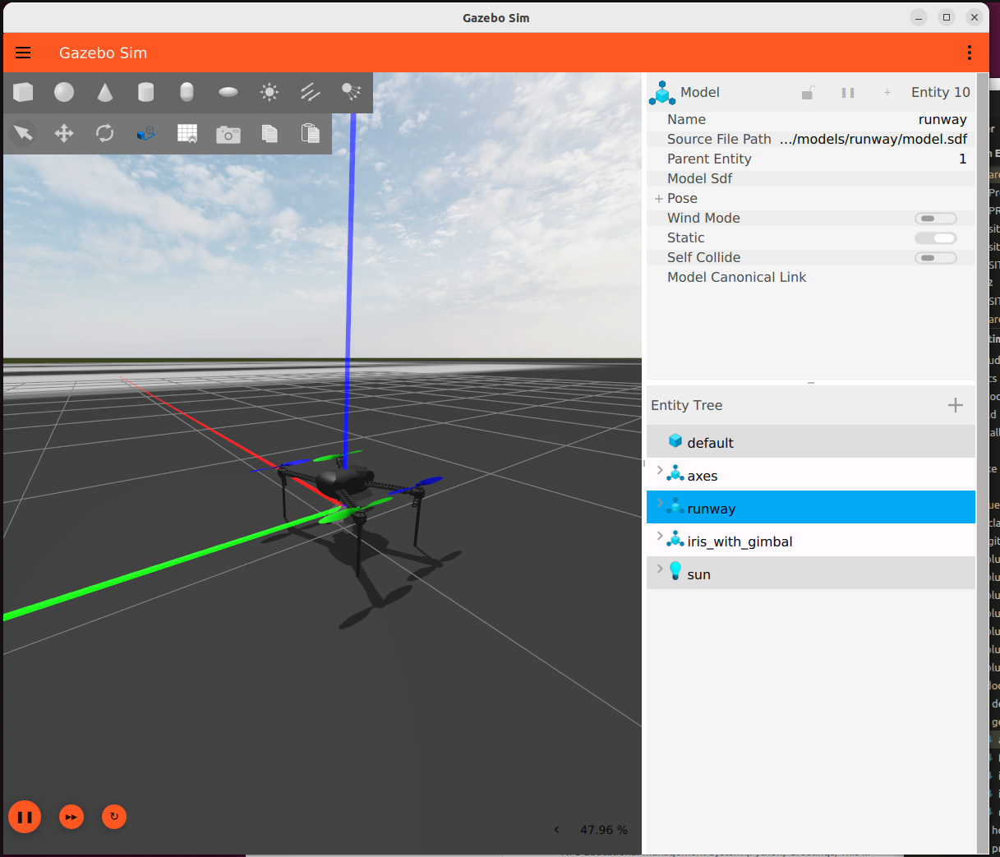
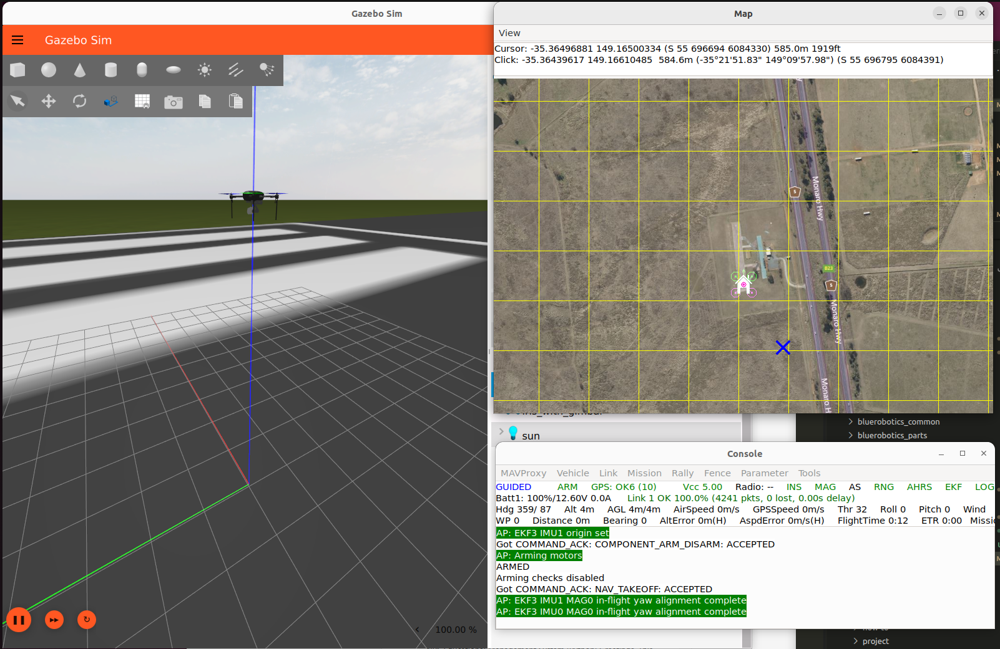

ArduPilot SITL setup
Setting up ArduPilot optional.
Not necessary to simuate many robots, but ArduPilot is the default for many low-level control and navigation solutions. Therefore, as reference implmentations, we illustrate how to integrate the Gazebo robot simuation with ArduPilot software in the loop (SITL).
Set up ArduPilot SITL and the Gazebo plugin, so a vehicle in these models can be driven by the same autopilot firmware it runs on the water.
This walkthrough has only been tested using drydock’s maritime container, and that is the only environment this page officially supports.
Prerequisites
Setup the drydock + source development environment: installation_drydock.md
Install
Four pieces, which stay separate:
Piece |
What it is |
How it is installed |
Where it goes |
|---|---|---|---|
ArduPilot firmware |
the real flight code compiled for x86 — |
source, built with |
|
|
a Gazebo system plugin that speaks ArduPilot’s UDP protocol and drives model joints |
source, built with |
|
MAVProxy |
command-line ground station; comes up with |
pip, by ArduPilot’s prereq script |
that script’s Python environment |
QGroundControl |
GUI ground station, what a BlueBoat operator uses |
AppImage download |
anywhere; not needed for the smoke test |
Source repo clones
Both checkouts are below pinned: ArduPilot to the Rover-4.7.1 release tag, and the ardupilot_gazebo clone is fixed by commit hash.
mkdir -p ~/maritime_ws/thirdparty
cd ~/maritime_ws/thirdparty
git clone https://github.com/ArduPilot/ardupilot.git
git -C ardupilot checkout Rover-4.7.1
git -C ardupilot submodule update --init --recursive
git clone https://github.com/ArduPilot/ardupilot_gazebo.git
git -C ardupilot_gazebo checkout 082a0fe231f6e63bc8d1598f1cba461d9e2ea7f5
Build the Gazebo plugin
In the container:
cd ~/maritime_ws/thirdparty/ardupilot_gazebo
export GZ_VERSION=jetty
cmake -S . -B build -DCMAKE_BUILD_TYPE=RelWithDebInfo
cmake --build build -j$(nproc)
GZ_VERSION=jetty is not optional. With the variable unset, ardupilot_gazebo’s CMakeLists falls through to its Harmonic branch and looks for gz-sim8.
The resulting shared libraries are in build/, e.g., libArduPilotPlugin.so.
Build the ArduPilot firmware
cd ~/maritime_ws/thirdparty/ardupilot
python3 -m venv --system-site-packages venv-ardupilot
DO_PYTHON_VENV_ENV=0 Tools/environment_install/install-prereqs-ubuntu.sh -y
source venv-ardupilot/bin/activate
./waf configure --board sitl
./waf rover
./waf sub
./waf copter
The script offers to edit your shell login file twice — once to activate its venv in every terminal, once to add Tools/autotest to PATH. Decline both. DO_PYTHON_VENV_ENV=0 handles the first; answer N to the second if you are prompted, and note that plain -y answers y to it. Both edits go to the host’s ~/.profile through the bind mount, and both are handled instead by the environment script below.
Verify the Python environment
The prereq script’s single pip install can fail part-way without stopping the script. Check, in the venv — every pip install on this page goes there, never into the system Python:
source ~/maritime_ws/thirdparty/ardupilot/venv-ardupilot/bin/activate
for m in future pymavlink serial MAVProxy em pexpect lxml numpy psutil yaml; do
python3 -c "import $m" 2>/dev/null || echo "MISSING $m"
done
Expect no output. If you see any of them missing (future, pymavlink, serial are MAVProxy) then fix by direct pip install.
pip install MAVProxy future
Environment
SITL needs the Gazebo variables, Tools/autotest on PATH and the ArduPilot venv. They go in one script rather than a login file, because $HOME is shared with the host. Write the file once:
cat > ~/maritime_ws/thirdparty/setup-ardupilot.sh <<'EOF'
# Source before running gz sim or sim_vehicle.py.
AP=$HOME/maritime_ws/thirdparty/ardupilot
AP_GZ=$HOME/maritime_ws/thirdparty/ardupilot_gazebo
# Activate the venv FIRST. Sourcing activate restores PATH to its pre-venv
# value, so anything added before it is silently discarded.
[ "$VIRTUAL_ENV" = "$AP/venv-ardupilot" ] || . "$AP/venv-ardupilot/bin/activate"
export GZ_VERSION=jetty
export GZ_SIM_SYSTEM_PLUGIN_PATH=$AP_GZ/build${GZ_SIM_SYSTEM_PLUGIN_PATH:+:$GZ_SIM_SYSTEM_PLUGIN_PATH}
export GZ_SIM_RESOURCE_PATH=$AP_GZ/models:$AP_GZ/worlds${GZ_SIM_RESOURCE_PATH:+:$GZ_SIM_RESOURCE_PATH}
export SDF_PATH=$GZ_SIM_RESOURCE_PATH
case ":$PATH:" in
*":$AP/Tools/autotest:"*) ;;
*) export PATH="$AP/Tools/autotest:$PATH" ;;
esac
EOF
Then source it in every shell doing SITL work, after the colcon workspace, since it appends to paths the workspace has already set:
source ~/maritime_ws/thirdparty/setup-ardupilot.sh
Smoke test - Iris UAV
Two shells. In the first:
source ~/maritime_ws/thirdparty/setup-ardupilot.sh
gz sim -v4 -r iris_runway.sdf
You should see the Iris UAV on a runway:

The iris_runway world with the Iris model loaded, before SITL connects. The
vehicle sits inert at this point: the plugin is listening on UDP 9002 and
nothing is commanding it.
In second terminal:
source ~/maritime_ws/thirdparty/setup-ardupilot.sh
AP=$HOME/maritime_ws/thirdparty/ardupilot/Tools/autotest/default_params
sim_vehicle.py -v ArduCopter -f gazebo-iris --model JSON --console --map -w \
--add-param-file=$AP/copter.parm \
--add-param-file=$AP/gazebo-iris.parm
The two --add-param-file arguments layer the frame’s parameter files on top of whatever sim_vehicle.py loads for -f gazebo-iris model.
Then at the MAVProxy prompt (the terminal in which you ran sim_vehicle.py):
mode guided
arm throttle
takeoff 5
The quadcopter should lift off in the Gazebo window and hold five meters.

The Iris holding altitude under ArduCopter. This is phase 0 complete: the firmware, the plugin and the ground station are all talking, on a vehicle nobody here has modified.
Troubleshooting
Could NOT find gz-sim8 — GZ_VERSION is unset or not jetty. See above.
gstreamer-1.0 not found at configure time — the GStreamer development packages are missing; see Container prerequisites. The plugin requires them unconditionally, even though only the camera plugin uses them.
[Errno 2] No such file or directory: 'mavproxy.py', or ModuleNotFoundError: No module named 'future' from rline.py — the prereq script’s batch install left gaps. Run the verification above; both install cleanly on their own.
sim_vehicle.py: command not found — setup-ardupilot.sh has not been sourced in this shell. The prereq script only adds Tools/autotest to PATH if you accept its prompt, which under drydock you should not.
you need to install pexpect with 'python3 -m pip install pexpect' — the prereq script has not been run, or its venv is not active. If venv-ardupilot does not exist, the script has not run; it is what creates it. source ~/venv-ardupilot/bin/activate and try again. Resist the suggestion in the message: a system-wide pip install is refused on Ubuntu 26.04, and forcing it past that puts ArduPilot’s pinned dependencies alongside ROS’s.
Gazebo starts but the vehicle never arms, and MAVProxy reports no heartbeat from the physics backend — the two processes are not talking. SITL sends to UDP 9002 and the plugin listens there; check that the model’s <fdm_addr> is 127.0.0.1 and that both are running inside the same container.
PreArm: Motors: Check frame class and type — the frame’s parameters were never applied. Either the checkout is not at the pin (git -C ~/maritime_ws/thirdparty/ardupilot tag --points-at HEAD should list Rover-4.7.1; newer ArduPilot does not load frame defaults when --model is given) or the --add-param-file arguments were dropped. Keep both arguments; -w alone does not help, because there are no defaults for it to reload.
The vehicle arms but does not move — usually the frame argument. The frame passed to sim_vehicle.py has to match the model’s <control> channel wiring, and --model JSON has to be present or SITL uses its own internal physics and ignores Gazebo entirely.
The vehicle arms, the thruster topics carry commands, and still nothing moves — the thruster plugin is not loaded. Check that GZ_SIM_SYSTEM_PLUGIN_PATH still contains the workspace’s install/lib after sourcing this script; if it holds only ardupilot_gazebo/build, the script is overwriting it rather than appending, and gz-maritime-thruster-system cannot be found. Commands keep flowing because ArduPilotPlugin publishes them regardless of whether anything is listening.
Reference
Optional background. None of it is needed to follow the steps above.
Why a venv, and why not to skip it
On Ubuntu 24.04 and later the script installs ArduPilot’s Python dependencies into a virtual environment at ~/venv-ardupilot rather than into the system Python. That is worth understanding rather than working around. The system Python is externally managed, so pip install into it is refused without --break-system-packages; and ArduPilot pins empy==3.3.4 while ROS 2’s ament uses empy 4.x, so installing their list system-wide would break colcon in a way that is unpleasant to diagnose.
The venv is created with --system-site-packages, so ROS stays visible from inside it. Activate it before waf and before sim_vehicle.py — a build outside it fails on a missing pexpect import.
Left to itself the script creates ~/venv-ardupilot, but it looks in the ArduPilot checkout first: if venv-ardupilot, venv or .venv already exists there it uses that instead. Creating it in the checkout is worth the extra line. It keeps the venv beside the source it belongs to rather than loose in a home directory that, under drydock, is shared with the host and already full of things that are not container-specific.
Warning
For drydock: $HOME is bind-mounted into the drydock container at the same path, so
anything the prereq script writes to your home directory appears on the host
too. Run with -y alone and it answers yes to both of its shell-login
prompts, appending a venv activation and a PATH line to your ~/.profile —
so every host terminal would then try to activate a venv built against the
container’s Python. DO_PYTHON_VENV_ENV=0 suppresses the venv one; decline
the PATH one. Set both explicitly in the environment script instead.
Building rover alone is enough for the BlueBoat. ./waf copter as well if you want the Iris smoke test below.